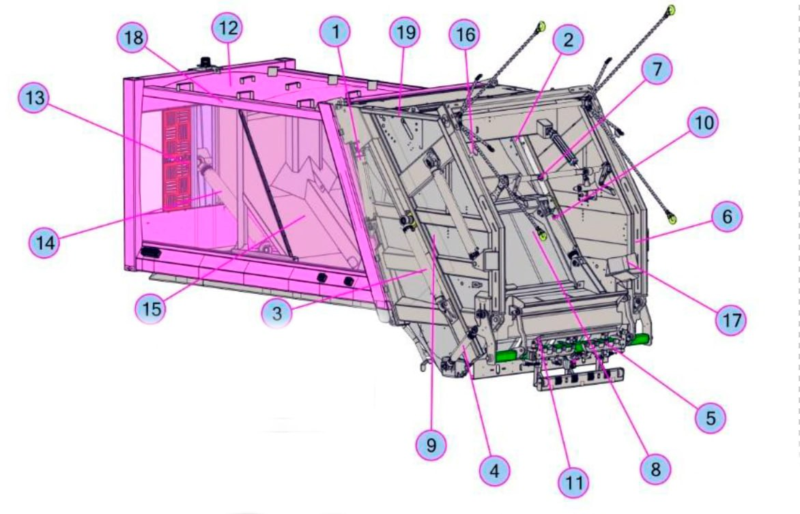
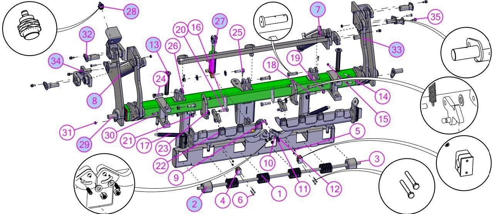
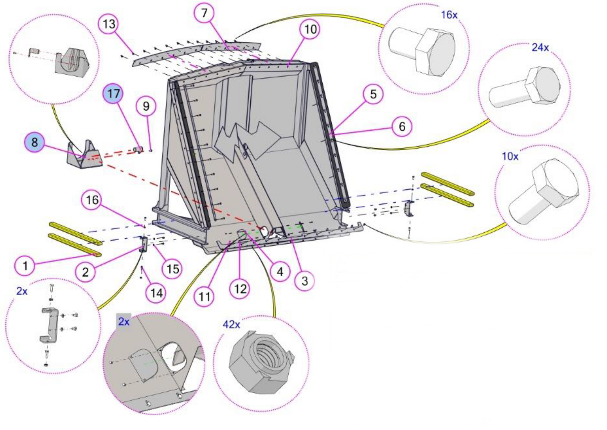

Основные детали мусоровозов HIDRO-MAK
Оригинальные запчасти HIDRO-MAK и их высококачественные аналоги.
Описание и характеристики
Оригинальные запчасти HIDRO-MAK и их высококачественные аналоги.
Описание и характеристики
Возможна поставка кантователей в сборе, а также поэлементно.
Описание и характеристики
Оригинальные запчасти HIDRO-MAK и их высококачественные аналоги.
Описание и характеристикиМы предлагаем услуги выездного сервиса и продажу запчастей для мусоровозов. Наша миссия — обеспечить качественную поддержку владельцам мусоровозов, предлагая широкий ассортимент запчастей и профессиональный ремонт. Залогом успеха является многолетний опыт в производстве, монтаже и сервисном обслуживании коммунальной техники. ИП Блинов С.Е. — авторизованный партнер по сервисному обслуживанию и продаже запчастей ведущих производителей спецтехники.
Оформите заявку, указав ваши контактные данные. Мы свяжемся с вами в кратчайшие сроки для обсуждения деталей заказа.
Предлагаем выездной сервис, поставки и изготовление запчастей для мусоровозов различных производителей.
Позвоните мне!
Мы предлагаем полный спектр услуг по ремонту и дооборудованию мусоровозов.
Первичная проверка состояния всех систем мусоровоза.
Диагностика, ремонт, замена систем управления, реле, датчиков, пультов и других элементов.
Изготовление, замена и ремонт заднего борта, выталкивающей и прессующей плит, ножа, кантователя и других элементов.
Установка, замена и ремонт систем подгазовки, освещения и камер обзора.
Диагностика, ремонт и замена КОМ, насосов, гидрораспределителей и гидроцилиндров.
Плановое выездное ТО для поддержания исправности всех систем мусоровоза.
ИП Блинов С.Е. является авторизованным партнером по сервису и продаже запчастей ведущих производителей спецтехники.
Мы обладаем необходимыми сертификатами и лицензиями, подтверждающими качество наших услуг и соответствие стандартам.

Мы всегда на связи, чтобы помочь вам.